Holiday in the Park — December 2008
Visited December 22, 2008. Originally published December 24, 2008. This is the most complete recovered update from the archive — 15 of 16 original photos survived, though quality varies, with some at original resolution and others recovered at lower quality.

Welcome to Six Flags Discovery Kingdom for the second annual Holiday in the Park!
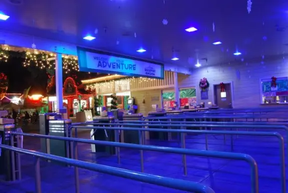
The rain had let up for a few hours allowing the park to remain open until 10 PM. The few folks who ventured out to the park were treated with short lines and plenty of lights.
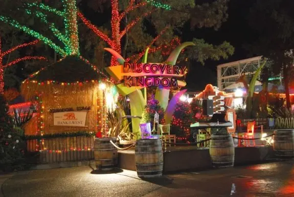
The Kingdom Stage has been decked out for the holidays. Musicians perform Christmas songs here every half hour or so.
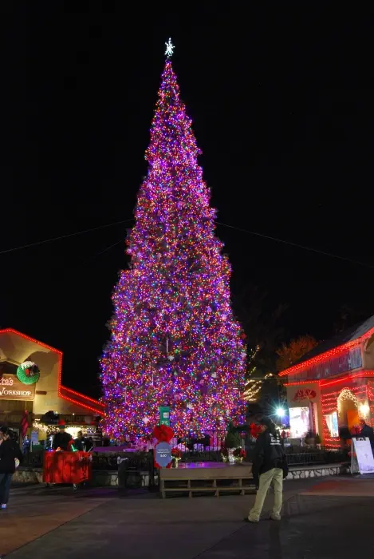
This year's 80 foot tall Christmas Tree features 30,000 LED lights and over 2,000 ornaments.
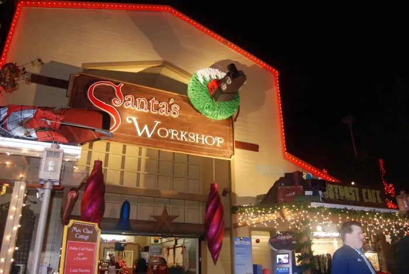
The Explorer Outpost has been transformed into Santa's Workshop. Kids can decorate cookies or take their photo with Santa!
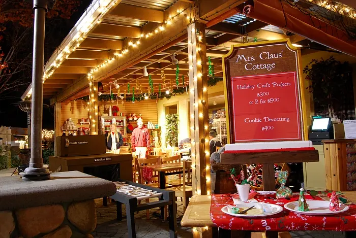
The cookie decorating area has a nice cozy feel to it.
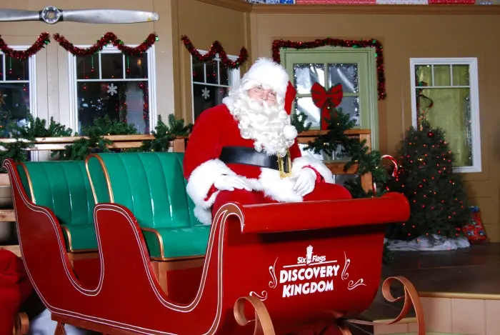
Inside Santa's Workshop is the big man himself, Santa Claus!
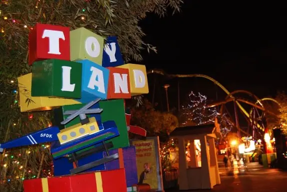
Throughout the rest of the park, general improvements have been made. For instance, Toy Land has received this new sign and off in the distance, Medusa's spotlights are working for the first time in years. But an even better surprise awaited around the bend...
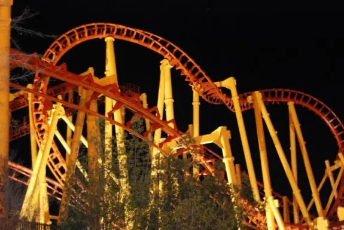
FRESH PAINT! That's right, Kong has received it's well deserved facelift. That means all of Discovery Kingdom's major coasters have been painted within the last two seasons!
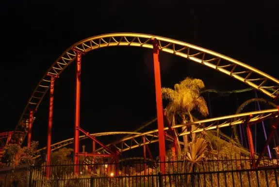
Many of the park's major coasters were open including Tony Hawk, Roar, Kong, and Cobra.
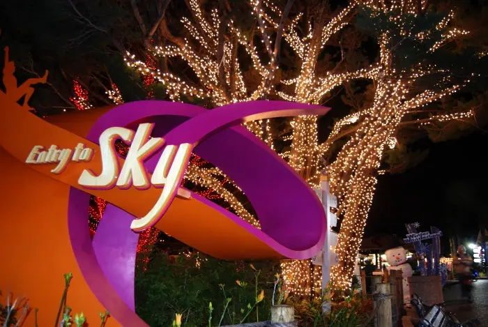
The sky section of the park has been transformed into...
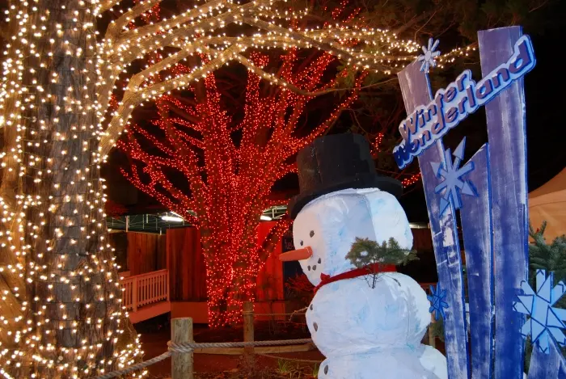
...Winter Wonderland. Note the awesome job the park did with the lights!
Photo #014 (out of original sequence — appeared before #013 in the original post; not recovered.) New for Holiday in the Park 2008 is the Snow Hill. It's a great place for guests of all ages to sled on down the mountain. And yes, even I took a trip down the hill!
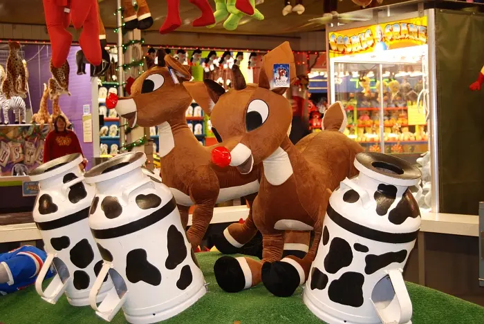
Over at the Lakeside Games area, there are plenty of holiday related prizes to win.
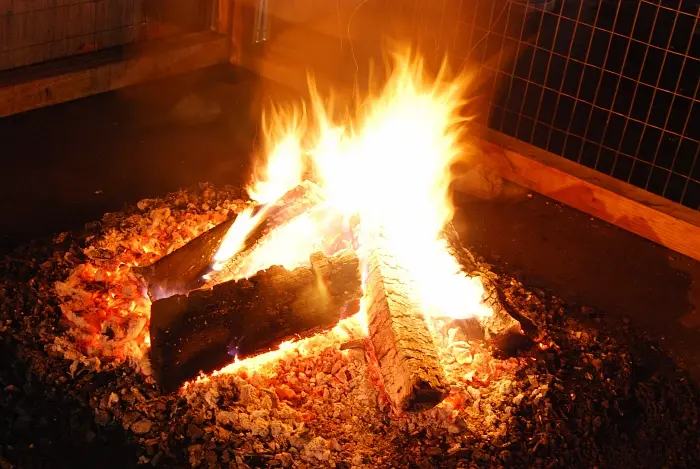
Throughout the entire park are these great fire pits. Grab a cup of hot chocolate or apple cider and warm up by the fire!
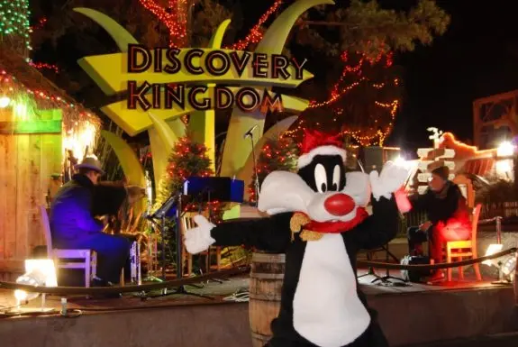
And with that, thanks for viewing this park update from Six Flags Discovery Kingdom's second annual Holiday in the Park!
And remember, this is just a taste of what Holiday in the Park has to offer. There are many holiday themed shows including Shouka, dolphin, and sealion shows. Plus, in addition to the coasters, Thomas Town, Looney Tunes Seaport, and Ocean Discovery are all open! You can even pet a sting ray at night if you want!
Holiday in the Park will be open December 26 - January 4 from 11 AM - 7 PM. Discovery Kingdom will be hosting a New Year's Eve party on December 31st from 4 PM - Midnight. The event will feature all the great Holiday in the Park festivities along with fireworks!
For more information on Holiday in the Park, visit the park's website.